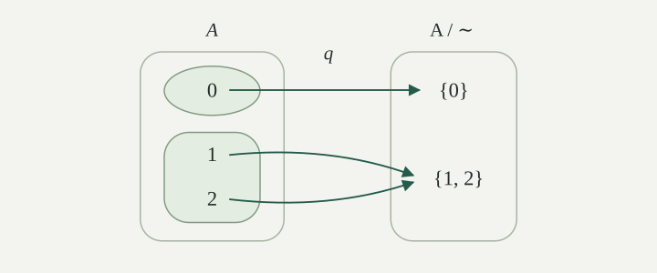

Two integers can have the same parity without being equal. Two inputs of a map can have the same output without being the same input. An equivalence relation expresses this kind of agreement.
Hereafter, we use the notation from Ordered pairs and relations and Images and preimages. A relation on a set \(A\) is a subset \(R\subseteq A\times A\); we write \(a\,R\,b\) for \((a,b)\in R\).
An equivalence relation on \(A\) is a relation satisfying all three properties below for every \(a,b,c\in A\).
| Property | Condition | Meaning |
|---|---|---|
| Reflexive | \(a\,R\,a\) | Each element is related to itself. |
| Symmetric | \(a\,R\,b\Rightarrow b\,R\,a\) | A related pair can be reversed. |
| Transitive | \(a\,R\,b\text{ and }b\,R\,c\Rightarrow a\,R\,c\) | Two successive relations give a third. |
We usually write an equivalence relation as \(\sim\), and call \(a\) and \(b\) equivalent when \(a\sim b\). The symbol always refers to a specified relation on a specified set.
Equality is an equivalence relation: \(a=a\); an equality can be reversed; and two equalities can be chained. The universal relation, in which every pair of elements is related, also satisfies all three conditions.
On \(\mathbb Z\), define equal parity by
Reflexivity follows from \(a-a=2\cdot0\). If \(a-b=2k\), then \(b-a=2(-k)\), giving symmetry. If also \(b-c=2\ell\), then \(a-c=2(k+\ell)\), giving transitivity. Thus equal parity is an equivalence relation. For example, \(-1\sim3\), although \(-1\ne3\).
For a finite example, let \(A=\{0,1,2\}\) and set
Every element lies in exactly one of the two groups \(\{0\}\) and \(\{1,2\}\). An element shares its own group; sharing a group is symmetric; and if \(a,b\) share a group and \(b,c\) share a group, both groups must be the one containing \(b\). This verifies all three properties. We will return to this example.
On \(A=\{0,1,2\}\), find a relation satisfying each pair of conditions but failing the third.
Without reflexivity: take the empty relation. It is symmetric and transitive: there are no related pairs to violate either implication. But \(0\) is not related to itself.
Without symmetry: take the usual relation \(\leq\) restricted to \(A\). It is reflexive and transitive, but \(0\leq1\) while \(1\nleq0\).
Without transitivity: relate each element to itself, and also relate \(0\) to \(1\), \(1\) to \(0\), \(1\) to \(2\), and \(2\) to \(1\). Every pair can be reversed, but \(0\,R\,1\) and \(1\,R\,2\) hold while \(0\,R\,2\) does not.
In this last example, the elements related to \(0\) form \(\{0,1\}\), while those related to \(2\) form \(\{1,2\}\). These sets overlap without being equal. Equivalence classes will have a stronger property.
Fix an equivalence relation \(\sim\) on \(A\). The equivalence class of \(a\in A\) is
When several relations are in use, we write \([a]_{\sim}\) to distinguish them. Reflexivity gives \(a\in[a]\), so every class is nonempty. Each element of a class is called a representative of that class.
In our finite example,
The class has two names, \([1]\) and \([2]\), because either member can represent it. Neither member is preferred by the relation.
For equal parity on \(\mathbb Z\), the classes are
Every integer is even or odd, and never both. An even integer differs from \(0\) by an even integer, so its class is \(E=[0]\); an odd integer similarly has class \(O=[1]\). Thus there are two classes, each containing infinitely many integers.
For an equivalence relation on \(A\) and \(a,b\in A\),
Moreover, any two distinct classes are disjoint.
Proof
Suppose \(a\sim b\). For every \(x\in A\), if \(a\sim x\), symmetry gives \(b\sim a\) and transitivity gives \(b\sim x\). Conversely, \(b\sim x\) together with \(a\sim b\) gives \(a\sim x\). Thus \(x\in[a]\) exactly when \(x\in[b]\), proving equality of the classes.
If \([a]=[b]\), then \(b\in[b]=[a]\) by reflexivity. The definition of \([a]\) gives \(a\sim b\), proving the reverse implication.
Finally, suppose \(x\in[a]\cap[b]\). Then \(a\sim x\) and \(b\sim x\). Reversing the second relation and using transitivity gives \(a\sim b\), so \([a]=[b]\). Therefore distinct classes have empty intersection. □
In particular, if \(b\in[a]\), then \([b]=[a]\). Naming a class by another representative leaves the set unchanged.
A partition of \(A\) is a set \(\mathcal P\) of subsets of \(A\) satisfying:
The members of \(\mathcal P\) are its parts. Equivalently, they are nonempty subsets of \(A\) such that every \(a\in A\) belongs to exactly one part. Coverage gives existence, and disjointness gives uniqueness. Conversely, unique membership gives coverage and prevents distinct parts from meeting.
For \(A=\{0,1,2\}\), the set \(\mathcal P=\{\{0\},\{1,2\}\}\) is a partition. The family \(\{\{0,1\},\{1,2\}\}\) is not, because its distinct members both contain \(1\). The family \(\{\{0\},\{1\}\}\) misses \(2\), and adding \(\varnothing\) to a partition violates the nonempty-parts condition.
We use a set of parts, so listing the same part twice does not create two parts.
The classes of an equivalence relation on \(A\) form a partition of \(A\). Conversely, a partition \(\mathcal P\) determines an equivalence relation by
These two constructions undo each other.
Proof
Start with an equivalence relation. Each class \([a]\) contains \(a\), so no class is empty. Every element lies in its own class, so the classes cover \(A\). Distinct classes are disjoint by . Hence they form a partition.
Now start with a partition \(\mathcal P\). Each \(a\in A\) belongs to a part, so \(a\sim_{\mathcal P}a\). The definition is symmetric in \(a,b\). If \(a\sim_{\mathcal P}b\) and \(b\sim_{\mathcal P}c\), choose parts \(C,D\) containing the respective pairs. Both contain \(b\); disjointness forces \(C=D\). This part contains \(a,c\), proving transitivity.
For each \(a\), let \(C\) be its unique part. An element \(b\) is related to \(a\) exactly when it belongs to \(C\), so \([a]_{\sim_{\mathcal P}}=C\). Every part occurs this way: it is nonempty, so take one of its members. Thus passing from a partition to its relation and back recovers precisely the original parts.
In the other direction, start with \(\sim\) and form its classes. If \(a\sim b\), both lie in \([a]\), so the partition relation relates them. If they lie in a common class \([c]\), then \(c\sim a\) and \(c\sim b\); symmetry and transitivity give \(a\sim b\). Thus the recovered relation is exactly \(\sim\). □
This is a one-to-one correspondence: a partition records exactly which pairs are equivalent, and an equivalence relation records exactly which elements belong to each part.
The quotient set of \(A\) by an equivalence relation \(\sim\) is the set of its equivalence classes:
Thus \([a]\subseteq A\), but \([a]\in A/{\sim}\). In particular, \(A/{\sim}\subseteq\mathcal P(A)\), where \(\mathcal P(A)\) is the power set introduced in Sets whose elements are subsets. As a set of subsets, the quotient is the partition just constructed; when using it as the domain or codomain of a map, we regard each whole class as one element.
The quotient projection is the map
Every class has a representative, so \(q\) is surjective. also gives
In our finite example, \(A/{\sim}=\{\{0\},\{1,2\}\}\). The projection sends \(0\) to \(\{0\}\) and sends both \(1\) and \(2\) to \(\{1,2\}\), as shown in .

The original elements \(1\) and \(2\) remain distinct in \(A\). Their images in the quotient coincide. For parity, the corresponding quotient is \(\{E,O\}\); the numbers \(0,1\) can label its two classes, but the classes themselves are sets of integers.
Describe the quotient for equality and for the universal relation. When is the projection injective? What are the equivalence relations, partitions, and quotients of the empty set?
For equality, \([a]=\{a\}\). Thus \(A/{=}=\{\{a\}:a\in A\}\), and \(a\mapsto\{a\}\) is a bijection from \(A\) to its quotient: it is onto by construction, and \(\{a\}=\{b\}\) implies \(a=b\). The quotient is in bijection with \(A\); we need not identify their elements.
For the universal relation on a nonempty set \(A\), every class is \(A\), so the quotient is the singleton \(\{A\}\). The projection has the same value on every input.
For any equivalence relation, \(q\) is injective exactly when equivalent elements are equal: use \(q(a)=q(b)\Longleftrightarrow a\sim b\). Since reflexivity already relates each element to itself, this says precisely that the relation is equality.
On \(A=\varnothing\), the only relation is \(\varnothing\subseteq A\times A\). All three equivalence conditions hold because there are no elements that could violate them. There are no classes, so the quotient is \(\varnothing\), and its projection is the unique map \(\varnothing\to\varnothing\).
The empty set has exactly one partition: the empty set of parts. It covers \(\varnothing\) and satisfies the other conditions vacuously. The family \(\{\varnothing\}\) is not a partition, because it contains an empty part. In this case equality and the universal relation coincide, and their quotient is empty, rather than a singleton.
For the parity relation on \(\mathbb Z\), consider the proposed rules
Does the first define a map \(u:\mathbb Z/{\sim}\to\mathbb Z\)? Does the second define a map \(v:\mathbb Z/{\sim}\to\{0,1\}\)?
The rule for \(u\) fails. Since \([0]=[2]\), it would require the same input class to have both output \(0\) and output \(2\). It therefore does not define a map.
The rule for \(v\) works: representatives of the same class have the same parity, so they give the same output. Equivalently, it is the map specified by \(v(E)=0\) and \(v(O)=1\).
A rule on representatives is well-defined when its output depends only on the class, not on the representative used to name that class. Checking this is part of establishing that the rule assigns exactly one output to each input.
It is possible to specify a different map by choosing \(0\) for \(E\) and \(1\) for \(O\). That chosen map does not satisfy \(u([n])=n\) for every integer \(n\). A choice of particular representatives does not repair the original rule.
Let \(\sim\) be an equivalence relation on \(A\), let \(q:A\to A/{\sim}\) be the projection, and let \(f:A\to B\). A map \(\bar f:A/{\sim}\to B\) satisfying \(f=\bar f\circ q\) exists if and only if
When it exists, it is unique and is given by \(\bar f([a])=f(a)\).
Condition \eqref{eq:constant-on-classes} says that \(f\) is constant on each class. Values on different classes may differ. The equation \(f=\bar f\circ q\) says that sending \(a\) straight to \(f(a)\) gives the same result as first taking its class and then applying \(\bar f\). We say that \(f\) factors through \(q\).
Proof
Suppose such a map \(\bar f\) exists. If \(a\sim b\), then \(q(a)=q(b)\), hence \(f(a)=\bar f(q(a))=\bar f(q(b))=f(b)\). This proves necessity.
Conversely, suppose \eqref{eq:constant-on-classes} holds. For each class \(C\), there is an \(a\in C\), and all members of \(C\) have the same image under \(f\). Assign that unique common value to \(\bar f(C)\). Thus every class receives one output in \(B\). In particular, \(\bar f([a])=f(a)\), giving \(\bar f\circ q=f\).
For uniqueness, if \(g:A/{\sim}\to B\) also satisfies \(g\circ q=f\), then every class can be written \([a]\), and
So \(g=\bar f\). □
Existence uses the agreement of values within a class; uniqueness uses that every class is reached by \(q\). The construction assigns a common value without specifying a preferred representative.
Under the hypotheses of , suppose \(\bar f\) exists. Then
Consequently, \(\bar f\) is surjective onto \(B\) exactly when \(f\) is. Moreover, \(\bar f\) is injective exactly when
Proof
Every output \(f(a)\) equals \(\bar f([a])\), and every input to \(\bar f\) is some class \([a]\). Therefore the images are equal, proving the surjectivity assertion.
If \(\bar f\) is injective and \(f(a)=f(b)\), then \(\bar f([a])=\bar f([b])\), so \([a]=[b]\) and \(a\sim b\). Conversely, suppose the displayed condition holds. If \(\bar f([a])=\bar f([b])\), then \(f(a)=f(b)\), hence \(a\sim b\) and \([a]=[b]\). Every two quotient elements have representatives, so this proves injectivity. □
Well-definedness requires equivalent inputs to have equal outputs. Injectivity of the induced map requires the reverse implication. Both hold precisely when the classes group together all, and only, inputs with the same output.
For parity on \(\mathbb Z\), does \(s([n])=[n+1]\) define a map of \(\mathbb Z/{\sim}\) to itself? More generally, for equivalence relations \(\sim\) on \(A\) and \(\approx\) on \(B\), when does a map \(h:A\to B\) induce a map \(H:A/{\sim}\to B/{\approx}\) by the rule \(H([a]_{\sim})=[h(a)]_{\approx}\)?
The parity rule works. If \(n-m=2k\), then \((n+1)-(m+1)=2k\), so equivalent inputs have equivalent outputs. The induced map exchanges the even and odd classes; applying it twice returns each class to itself.
In general, the necessary and sufficient condition is
Indeed, two representatives name the same input class exactly when \(a\sim a'\), and the proposed outputs are the same quotient element exactly when \(h(a)\approx h(a')\). This proves both necessity and sufficiency. It is also an application of the preceding factorization theorem to the map \(a\mapsto[h(a)]_{\approx}\).
The outputs \(h(a)\) and \(h(a')\) need not be equal as elements of \(B\). They must name the same class in the specified codomain \(B/{\approx}\).
For any map \(f:A\to B\), define a relation on \(A\) by
This is an equivalence relation. Reflexivity, symmetry, and transitivity follow respectively from \(f(a)=f(a)\), reversing an equality, and chaining two equalities. It is sometimes called the kernel relation of \(f\).
Recall that the fiber over \(y\in B\) is the set \(f^{-1}(\{y\})=\{x\in A:f(x)=y\}\). For this relation,
Both sides consist of exactly those \(x\in A\) with \(f(x)=f(a)\). Thus every class is a nonempty fiber. Conversely, if the fiber over \(y\) is nonempty, take \(a\) with \(f(a)=y\); that fiber equals \([a]_{\sim_f}\). Consequently,
The restriction to \(y\in f(A)\) matters: missed outputs have empty fibers, and empty sets are not classes. If \(f\) is injective, its nonempty fibers are singletons. If it is surjective, every \(y\in B\) indexes a nonempty fiber.
Every equivalence relation also arises from a map in this way: for its projection \(q\), the equality \(q(a)=q(b)\) holds exactly when \(a\sim b\). The original relation is therefore the kernel relation of \(q\).
Let \(A=\{0,1,2\}\), let \(B=\{p,q,r\}\) have three distinct elements, and define \(f(0)=p\), \(f(1)=f(2)=q\), as in Maps, inputs, and outputs. Find the fibers, the quotient by \(\sim_f\), and the induced map into \(B\). Is the induced map bijective?
The fibers over \(p,q,r\) are respectively \(\{0\}\), \(\{1,2\}\), and \(\varnothing\). Hence the equivalence classes are exactly the two groups used throughout this entry, and \(A/{\sim_f}=\{\{0\},\{1,2\}\}\).
The induced map sends \(\{0\}\) to \(p\) and \(\{1,2\}\) to \(q\). It is injective because these outputs differ. It is not surjective onto \(B\), since \(r\) is still missed. With codomain \(f(A)=\{p,q\}\), it is bijective.
Here the symbol \(q\) is one of the three output labels; the quotient projection is the separate map \(a\mapsto[a]_{\sim_f}\).
For a map \(f:A\to B\), let \(a\sim_f b\) mean \(f(a)=f(b)\). Then
is a bijection.
Proof
Every value \(f(a)\) lies in the stated codomain. If two representatives name the same class, they are \(\sim_f\)-equivalent and so have equal images under \(f\). Thus \(\Phi\) is well-defined.
If \(\Phi([a]_{\sim_f})=\Phi([b]_{\sim_f})\), then \(f(a)=f(b)\). By the definition of \(\sim_f\), this gives \(a\sim_f b\), hence equality of the classes. So \(\Phi\) is injective. For every \(y\in f(A)\), some \(a\in A\) satisfies \(f(a)=y\), and its class maps to \(y\). So \(\Phi\) is surjective. □
The inverse sends \(y\in f(A)\) to its fiber \(f^{-1}(\{y\})\). This fiber is one class, and every member of it has output \(y\), so the two maps undo each other. It is unnecessary to choose one particular input from each fiber.
Writing \(q_f(a)=[a]_{\sim_f}\) and letting \(\iota:f(A)\to B\) be the inclusion \(\iota(y)=y\), we have the factorization
The first map is surjective, the middle map is bijective, and the last is injective. If \(f\) is surjective, \(f(A)=B\), so the quotient is in bijection with all of \(B\). If \(A\) is empty, both \(A/{\sim_f}\) and \(f(A)\) are empty, and the same proof gives their unique bijection.